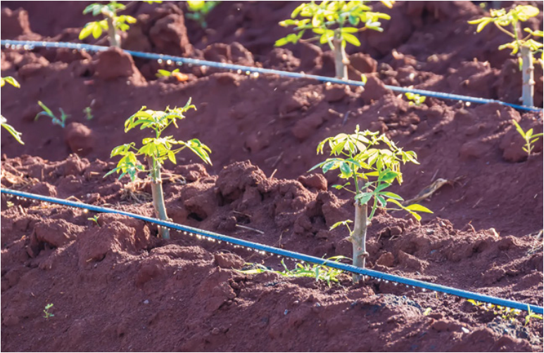
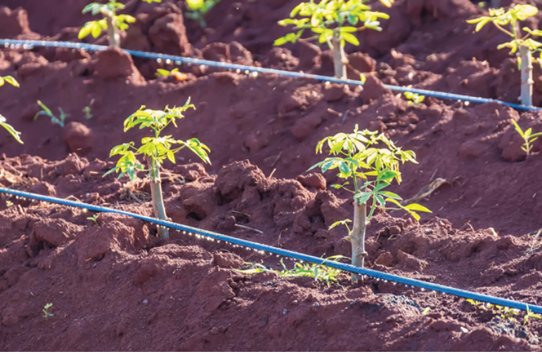

Figure 3.4: Drip irrigation
Source: https://elemental.green/drip-irrigation-systems-the-water-saving-solution/:
Activity 3.3
Visit the established cassava plot in the school field/nearby cassava fields and
perform the following tasks:
(a) Observe water management practices employed in the fields;
(b) Adopt any suitable management practice and apply it in the cassava plot
you have established; then,
(c) Summarise the lesson learnt in your portfolio.
Nutrient management
Adding nutrients to the soil helps to maintain soil health and enhances depleted
or poor soils. Both organic and inorganic fertilisers can be used in cassava
production. Organic manures, such as poultry manure, cow dung, and compost,
supply essential nutrients and organic carbon. Organic manures improve the
soil’s physical properties, water retention, and microbial activity, resulting in
fertile soil.